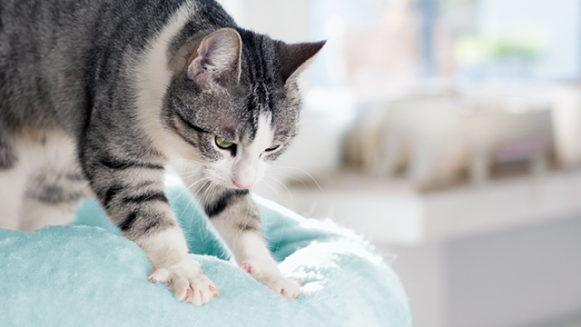
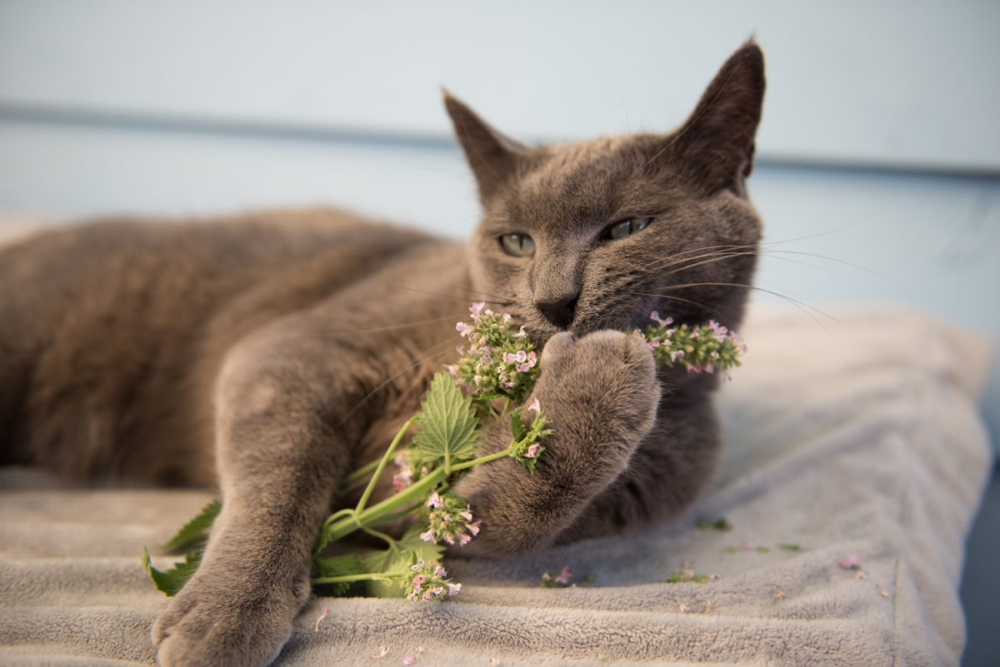
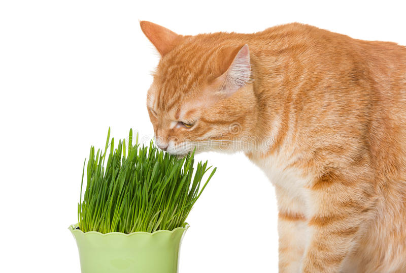
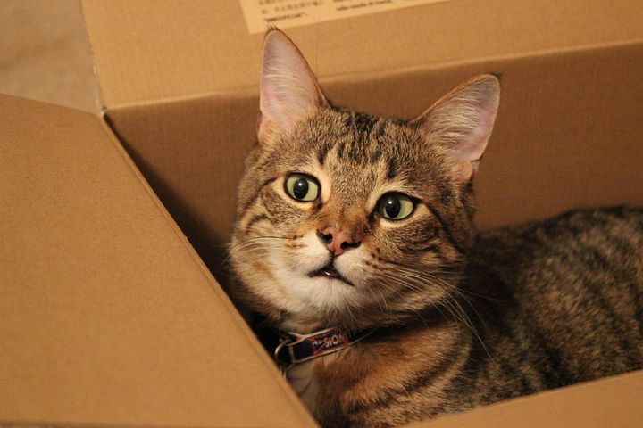

Purring is usually associated with some kind of enjoyable activity,
such as nursing, being pet, grooming a fellow cat,
or just being in a comfortable environment, but cats
also purr when they're sick, injured, or stressed.
This could serve to soothe them, but
researchers have found that purring actually helps them heal
because of the low frequency of the vibrations.
Some behaviorists believe that purring serves as a method of communication
too, such as from a kitten to its mother or when they're hungry
(which is often combined with a meow).
Why do cats knead?

Kneading serves a number of purposes during all stages of a cat's life.
As kittens,kneading the mammary glands of their mother
stimulates milk production during nursing.
Later in life, kneading can also be used to mark territory by allowing the release of pheromones that
are stored inside special scent glands located in the paw. Kneading can also be used to break down
bedding and create a warm and comfortable environment for sleeping.
Why do cats sleep so much?
Cats sleep up to 16 hours per day in short increments that alternate between dozing
and deep sleep. Some cats, especially seniors,
can sleep up to 20 hours per day! One reason they sleep so much is because
they are predators that use a lot of energy in small bursts when they hunt.
They're also crepuscular, which means they are most active at dawn and dusk so you're more
likely to see them sleeping throughout the day.
How long do cats live?
The average lifespan of an indoor cat is 13 to 17 years.
With yearly veterinary exams and routine care, our feline friends
are living longer than ever.
In fact, the percentage of domestic cats 6 years old and above has doubled over the last 25 years.
This coincides with a growing appreciation for cats as a whole as well as
owners becoming aware of their unique physiology
and set of behavioral needs.
Why do cats have whiskers?
Whiskers are a highly sensitive organ, which helps informcatsabout surrounding objects, air movements and more. Their length helps a cat
to gauge its ability to navigate a
tight space and they can be raised or lowered as a means of communication or during
stressful events. Because of their vital importance, never
trim or pluck your cat's whiskers.
What does catnip do to cats?

Catnip is perennial herb and member of the mint family.
Its active ingredient nepetalactone is found
mostly in its leaves and stems. Only about
50% of cats respond to catnip,
and of those 50% the response is
widely variable in behavior. Catnip is not considered harmful and
the responses vary from sedation to hyper activity. Most people use it
to attract their cat to a scratching post or to increase playtime with toys.
Why do cats hate water?
Many cats dislike water for
a couple of reasons. First, most cats have
very limited experiences with water, and they're often negative (i.e. a bath).
In fact, since they evolved in desert climates, they've never been very familiar
with water. Their fur also isn't designed to repel water so it becomes
uncomfortable if it gets too wet. Not all cats hate water, though.
There are certain breeds of cats that love water, such as Abyssinians,
Turkish Vans, Bengals, and Maine Coons.
Why do cats eat grass?

Most veterinarians think cats like to eat grass to relieve gastrointestinal
issues or to get rid of parasites since grass has a lot of fiber. It also
provides nutrients (i.e. folic acid). Other cats, however, may just like the
taste of it. Just make sure your cat isn't eating any toxic plants or grass
that was treated with chemicals, and if you notice they're eating large amounts
of grass, talk to your vet because there could be an underlying problem.
Why do cats like boxes?

Predation behavior means boxes are great for hiding, to stalk pray, or retreat for
safety as needed. Cats enjoy all kinds of enclosures and feel safe and comfortable
in a box, backpack or other type of bag.
What is a group of cats called?
A group of cats is called a clowder, or a glaring.
clowder is Middle English and means “to huddle.”